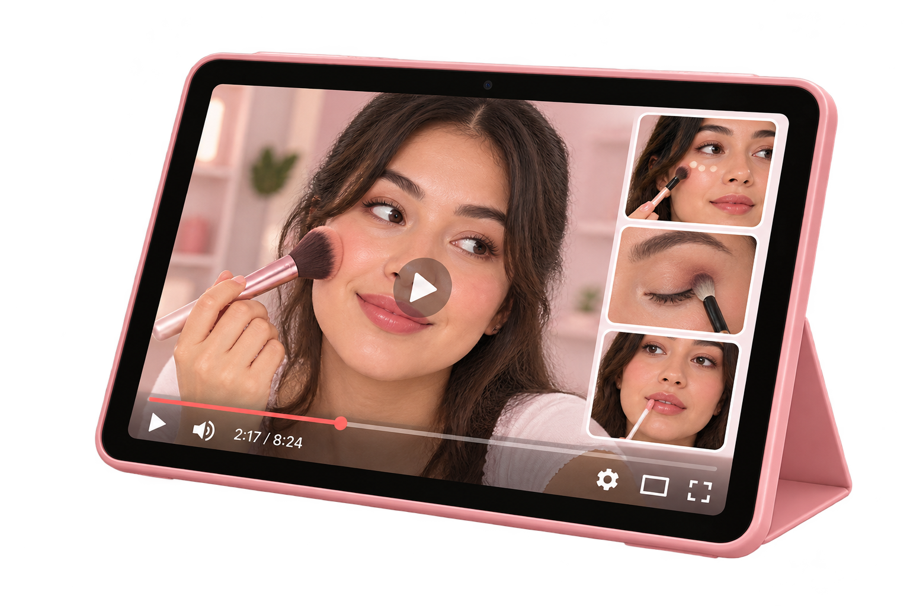

TUTORIALES
PASO A PASO
Aprende paso a paso técnicas, looks y consejos para resaltar tu belleza en cada ocasión.

APRENDE A TU RITMO
Maquillaje natural para principiantes
Aprende a crear un maquillaje sencillo y natural para todos los días.
Cómo aplicar la base correctamente
Descubre cómo preparar tu piel y aplicar la base para lograr un acabado uniforme.
Delineado fácil paso a paso
Aprende una técnica sencilla para comenzar a delinear tus ojos sin complicarte.
Preparar la piel antes del maquillaje
Limpieza, hidratación y preparación básica del rostro.
Cómo aplicar el corrector correctamente
Para cubrir ojeras e imperfecciones sin usar demasiado producto.
Cómo aplicar rubor e iluminador
Para dar color y luminosidad al rostro de forma natural.
Cómo hacer cejas laminadas
Para rellenarlas y definirlas sin que se vean demasiado marcadas.
Cómo aplicar máscara de pestañas
Consejos para definir y alargar las pestañas sin dejar grumos.
Aplicar labial para un acabado natural
Cómo definir los labios y aplicar el color de manera uniforme.